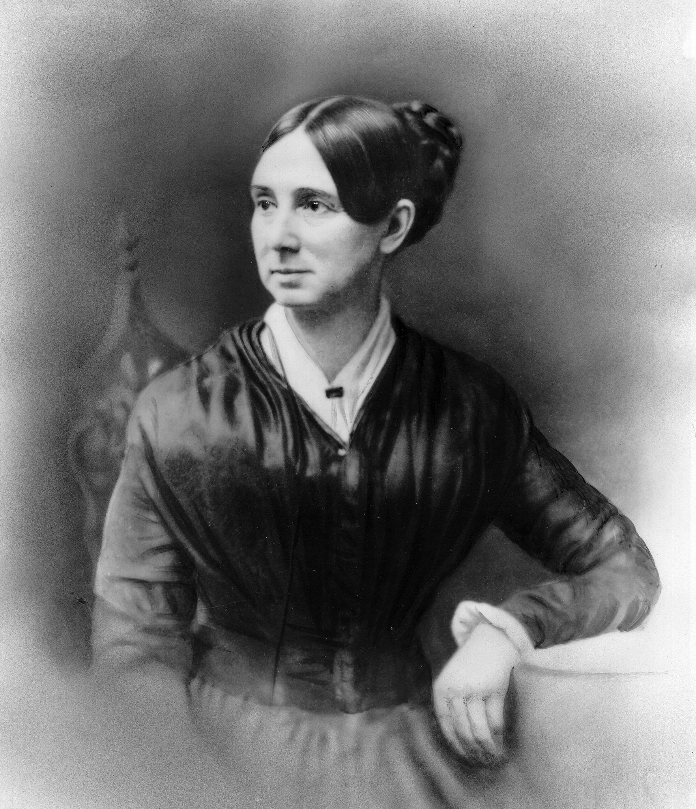

Dorothea Dix was an extremely significant reformer in the 1800’s. Although in her early years she would work as a teacher, she would eventually move on from this profession and begin her career as a reformer, specifically of prisons and asylums, where she would advocate for better living conditions for criminals as well as the mentally ill. Although her reforms were rejected and disliked by most government officials of her time, she never gave up on the core ideas of her cause, and her ideas would come to be embraced by many down the line.
- Born in hampden, Maine, 1802
- Had a very difficult childhood, moved to live with grandmother at a young age
- Father insisted she be educated
- Would go on to become a teacher and found several schools
- Over the years, Dix's health worsened
- Would end up closing her last school in 1836 at the age of 34
- Would after this travel to Europe and gain an interest in activism
- After her return she would begin touring prisons across the country
- She went on a tour of many prisons across the States
- Found that many prisoners were neglected and abused
- The mentally ill often lived in the same cell as violent criminals
- Dix compiled reports a presented them to the government and public, leading to funding of Worcester mental hospital
- American civil war would begin in 1861
- Dix would assist Union as a Nurse
- She would be appointed to the position of Superintendant of women nurses
- She was feared and not well-liked by the volunteers that served under her, and would be removed from her position several months later
- After the civil war her activism would continue in Europe
- Died in 1887 at the age of 85, in a hsopital that had been dedicated to her
Prison cell image By Thesab - Own work, CC BY-SA 4.0, https://commons.wikimedia.org/w/index.php?curid=3186464
Other sources:
https://www.womenshistory.org/education-resources/biographies/dorothea-dix
https://www.history.com/topics/womens-history/dorothea-lynde-dix
